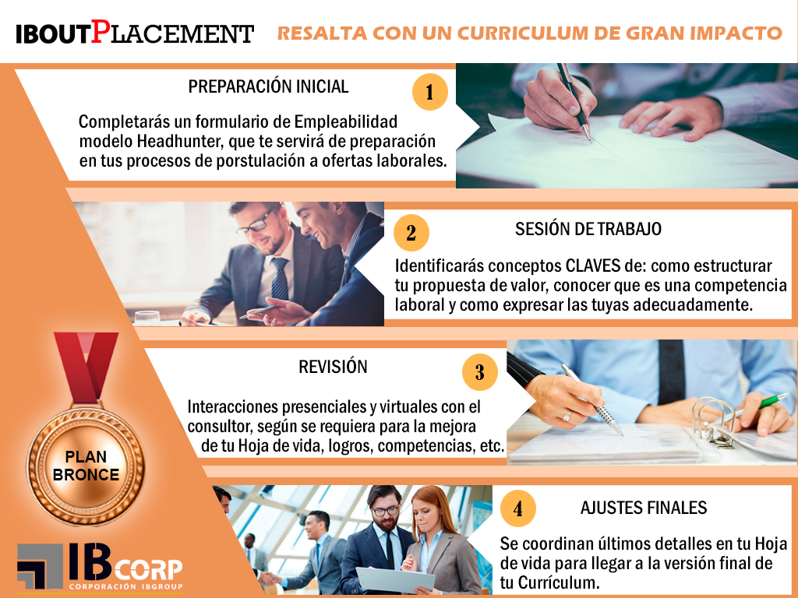

PLAN BRONCE: RESALTA CON UN CURRICULUM DE GRAN IMPACTO Y POTENCIA TU VISIBILIDAD
Muchas veces damos poca importancia al contar con un currículo bien elaborado o tenemos un mal concepto de lo que esto significa, no todo es texto y colocar todo lo que se pueda en la hoja de vida para hacerlo voluminoso, esta es una mala estrategia!!, es necesario tener capacidad de síntesis así como orden y ser meticulosos en cada detalle, incluir logros es imprescindible, así como presentar la información de una manera que impresione… Ahora bien, no solo es llamar la atención al reclutador sino que es importante desarrollar un estrategia y habilidades para trazar que camino tomará la una entrevista de trabajo, razón por la cual la elaboración de tu currículo es el punto de partida de tu visibilidad laboral exitosa y debes manejar mucho más información que la que registras en tu hoja de vida para tener éxito en conseguir el empleo que quieres. Es por eso que nosotros no te hacemos tu currículo sino que te enseñamos a elaborarlo, identificando conceptos clave para tu visibilidad laboral y así alcanzar la mejor versión de tu hoja de vida.
PROCESO:
